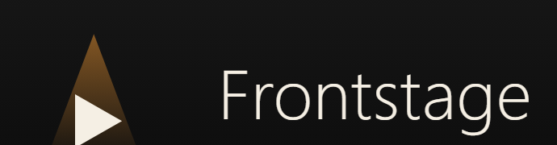
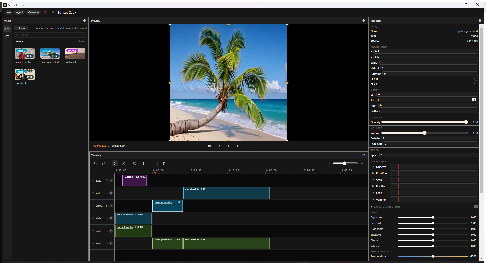

<meta charset="utf-8">
<title>Frontstage — the AI-native video editor</title>
<meta name="viewport" content="width=device-width, initial-scale=1">
<meta name="description" content="Cut, grade, caption, generate — on a real multi-track timeline. Free, open source, in your browser.">
<meta property="og:title" content="Frontstage — the AI-native video editor">
<meta property="og:description" content="Free. Open source. In your browser.">
<meta property="og:image" content="https://frontstage.studio/assets/hero.png">
<meta property="og:type" content="website">
<meta name="twitter:card" content="summary_large_image">
<link rel="icon" type="image/svg+xml" href="assets/favicon.svg">
<style>
  :root {
    --bg-base: #0a0a0a;
    --bg-surface: #161616;
    --bg-raised: #1e1e1e;
    --text-primary: rgba(255, 255, 255, 1);
    --text-secondary: rgba(255, 255, 255, 0.80);
    --text-tertiary: rgba(255, 255, 255, 0.62);
    --text-muted: rgba(255, 255, 255, 0.40);
    --cream: rgb(245, 239, 228);
    --amber: rgb(242, 153, 51);
    --border-subtle: rgba(255, 255, 255, 0.12);
    --border-primary: rgba(255, 255, 255, 0.16);
    --text-on-accent: rgb(10, 10, 10);
    --font-sans: -apple-system, BlinkMacSystemFont, "Segoe UI", Roboto, Helvetica, Arial, sans-serif;
  }

  * { box-sizing: border-box; }

  html { background: var(--bg-base); }

  body {
    margin: 0;
    background: var(--bg-base);
    color: var(--text-secondary);
    font-family: var(--font-sans);
    font-size: 16px;
    line-height: 1.5;
    -webkit-font-smoothing: antialiased;
  }

  a { color: inherit; }

  img { max-width: 100%; display: block; }

  .wrap {
    max-width: 1120px;
    margin: 0 auto;
    padding: 0 24px;
  }

  /* Navbar */

  .nav {
    position: sticky;
    top: 0;
    z-index: 10;
    background: rgba(10, 10, 10, 0.86);
    backdrop-filter: blur(10px);
    border-bottom: 1px solid var(--border-subtle);
  }

  .nav .wrap {
    display: flex;
    align-items: center;
    justify-content: space-between;
    height: 64px;
  }

  .nav .logo {
    height: 26px;
    width: auto;
  }

  .nav ul {
    list-style: none;
    display: flex;
    align-items: center;
    gap: 32px;
    margin: 0;
    padding: 0;
  }

  .nav a {
    text-decoration: none;
    font-size: 14px;
    font-weight: 500;
    color: var(--text-secondary);
    transition: color 0.15s ease;
  }

  .nav a:hover { color: var(--cream); }

  /* Hero */

  .hero {
    padding: 96px 0 56px;
    text-align: center;
  }

  .hero h1 {
    margin: 0 0 16px;
    font-size: clamp(34px, 6vw, 56px);
    font-weight: 700;
    letter-spacing: -0.5px;
    color: var(--text-primary);
  }

  .hero p.subtitle {
    margin: 0 auto 40px;
    max-width: 520px;
    font-size: 19px;
    color: var(--text-tertiary);
  }

  .cta-row {
    display: flex;
    justify-content: center;
    gap: 16px;
    flex-wrap: wrap;
  }

  .btn {
    display: inline-flex;
    align-items: center;
    justify-content: center;
    padding: 13px 26px;
    border-radius: 10px;
    font-size: 15px;
    font-weight: 600;
    text-decoration: none;
    border: 1px solid transparent;
    transition: opacity 0.15s ease, border-color 0.15s ease, background 0.15s ease;
  }

  .btn-primary {
    background: var(--cream);
    color: var(--text-on-accent);
  }

  .btn-primary:hover { opacity: 0.88; }

  .btn-secondary {
    background: transparent;
    color: var(--text-primary);
    border-color: var(--border-primary);
  }

  .btn-secondary:hover { border-color: var(--cream); }

  /* Product screenshot */

  .shot {
    padding: 0 24px 96px;
  }

  .shot figure {
    margin: 0 auto;
    max-width: 1120px;
  }

  .shot img {
    width: 100%;
    border-radius: 14px;
    border: 1px solid var(--border-subtle);
    box-shadow: 0 24px 64px rgba(0, 0, 0, 0.45);
  }

  .shot figcaption {
    margin-top: 16px;
    text-align: center;
    font-size: 13px;
    color: var(--text-muted);
  }

  /* Section heading */

  h2.section-title {
    text-align: center;
    font-size: 13px;
    font-weight: 600;
    letter-spacing: 1.5px;
    text-transform: uppercase;
    color: var(--text-muted);
    margin: 0 0 40px;
  }

  /* Feature cards */

  .features { padding: 0 0 88px; }

  .card-grid {
    display: grid;
    grid-template-columns: repeat(3, 1fr);
    gap: 20px;
  }

  .card {
    background: var(--bg-surface);
    border: 1px solid var(--border-subtle);
    border-radius: 14px;
    padding: 28px;
  }

  .card .icon {
    width: 36px;
    height: 36px;
    margin-bottom: 20px;
    color: var(--amber);
  }

  .card h3 {
    margin: 0 0 10px;
    font-size: 17px;
    font-weight: 600;
    color: var(--text-primary);
  }

  .card p {
    margin: 0;
    font-size: 14px;
    color: var(--text-tertiary);
  }

  /* On-device strip */

  .strip {
    background: var(--bg-surface);
    border-top: 1px solid var(--border-subtle);
    border-bottom: 1px solid var(--border-subtle);
    padding: 32px 0;
  }

  .strip .wrap {
    display: flex;
    align-items: center;
    gap: 20px;
    flex-wrap: wrap;
  }

  .strip .icon {
    width: 24px;
    height: 24px;
    flex: none;
    color: var(--cream);
  }

  .strip p {
    margin: 0;
    font-size: 14px;
    color: var(--text-tertiary);
  }

  .strip p strong {
    color: var(--text-secondary);
    font-weight: 500;
  }

  /* Trust block */

  .trust {
    padding: 72px 0;
    text-align: center;
  }

  .trust p {
    max-width: 560px;
    margin: 0 auto;
    font-size: 15px;
    color: var(--text-tertiary);
  }

  .trust a {
    color: var(--cream);
    text-decoration: underline;
    text-decoration-color: var(--border-primary);
    text-underline-offset: 3px;
  }

  .trust a:hover { text-decoration-color: var(--cream); }

  /* Footer */

  footer {
    border-top: 1px solid var(--border-subtle);
    padding: 40px 0;
  }

  footer .wrap {
    display: flex;
    align-items: center;
    justify-content: center;
    gap: 32px;
    flex-wrap: wrap;
  }

  footer a {
    text-decoration: none;
    font-size: 14px;
    font-weight: 500;
    color: var(--text-tertiary);
    transition: color 0.15s ease;
  }

  footer a:hover { color: var(--cream); }

  @media (max-width: 720px) {
    .hero { padding: 72px 0 40px; }
    .card-grid { grid-template-columns: 1fr; }
    .strip .wrap { flex-direction: column; align-items: flex-start; text-align: left; }
    .nav ul { gap: 20px; }
  }
</style>

<header class="nav">
  <div class="wrap">
    <a href="/" aria-label="Frontstage home">
      
    </a>
    <ul>
      <li><a href="#features">Features</a></li>
      <li><a href="https://github.com/x777/frontstage">GitHub</a></li>
      <li><a href="https://ko-fi.com/frontstage">Donate</a></li>
    </ul>
  </div>
</header>

<main>
  <section class="hero">
    <div class="wrap">
      <h1>The AI-native video editor.</h1>
      <p class="subtitle">Free. Open source. In your browser.</p>
      <div class="cta-row">
        <a class="btn btn-primary" href="https://frontstage.studio/studio">Open Studio</a>
        <a class="btn btn-secondary" href="https://github.com/x777/frontstage/releases/latest">Download for Windows</a>
      </div>
    </div>
  </section>

  <section class="shot">
    <figure>
      
      <figcaption>Editing &ldquo;Sunset Cut&rdquo; — the palm tree clip was generated inside the editor.</figcaption>
    </figure>
  </section>

  <section class="features" id="features">
    <div class="wrap">
      <h2 class="section-title">What it does</h2>
      <div class="card-grid">
        <div class="card">
          <svg class="icon" viewBox="0 0 24 24" fill="none" stroke="currentColor" stroke-width="1.5" stroke-linecap="round" stroke-linejoin="round"><path d="M12 3l1.8 5.2L19 10l-5.2 1.8L12 17l-1.8-5.2L5 10l5.2-1.8L12 3z"/><path d="M19 15l.8 2.2L22 18l-2.2.8L19 21l-.8-2.2L16 18l2.2-.8L19 15z"/></svg>
          <h3>AI generation</h3>
          <p>Video, image, audio, and TTS via fal.ai — your key, your cost control. Results land straight in the library.</p>
        </div>
        <div class="card">
          <svg class="icon" viewBox="0 0 24 24" fill="none" stroke="currentColor" stroke-width="1.5" stroke-linecap="round" stroke-linejoin="round"><rect x="3" y="5" width="18" height="4" rx="1"/><rect x="3" y="15" width="12" height="4" rx="1"/><path d="M8 9v6"/><path d="M17 9v2"/></svg>
          <h3>Real timeline editing</h3>
          <p>Multi-track. Ripple and razor tools, linked audio, frame-accurate trims, color grading built in.</p>
        </div>
        <div class="card">
          <svg class="icon" viewBox="0 0 24 24" fill="none" stroke="currentColor" stroke-width="1.5" stroke-linecap="round" stroke-linejoin="round"><path d="M4 5h16v11H8l-4 4V5z"/></svg>
          <h3>Agent</h3>
          <p>A chat that edits your timeline — cuts, layout, color, captions — over the same undo stack you use. Any model via OpenRouter, your key.</p>
        </div>
      </div>
    </div>
  </section>

  <section class="strip">
    <div class="wrap">
      <svg class="icon" viewBox="0 0 24 24" fill="none" stroke="currentColor" stroke-width="1.5" stroke-linecap="round" stroke-linejoin="round"><rect x="4" y="4" width="16" height="16" rx="2"/><path d="M9 9h6v6H9z"/></svg>
      <p><strong>Transcription and visual search run free, on-device. No keys.</strong><br>Point Claude at your project via MCP — 43 tools, edit it from outside.</p>
    </div>
  </section>

  <section class="trust">
    <div class="wrap">
      <p>Your keys, your data — keys live in your browser. Zero telemetry.<br>
      <a href="https://github.com/x777/frontstage/blob/main/LICENSE">GPL-3.0</a>, a port of
      <a href="https://github.com/palmier-io/palmier-pro">Palmier Pro</a>.</p>
    </div>
  </section>
</main>

<footer>
  <div class="wrap">
    <a href="https://ko-fi.com/frontstage">Ko-fi</a>
    <a href="https://github.com/x777/frontstage/blob/main/DONATE.md">Crypto</a>
    <a href="https://github.com/x777/frontstage">GitHub</a>
  </div>
</footer>
